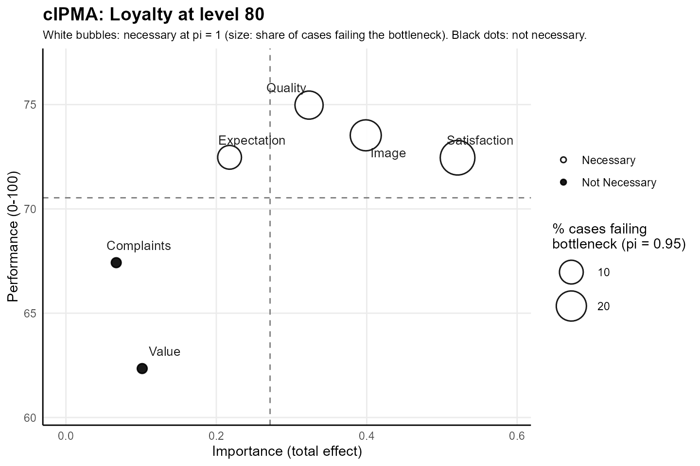
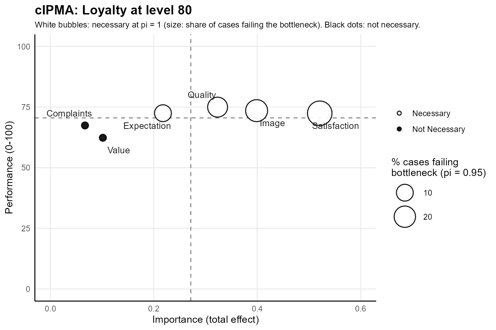

The combined map of a combined importance-performance map analysis
(cIPMA) shows each predictor of a target construct at the position given
by importance and performance, and marks the predictors that are
necessary for a target level of the construct (Hauff et al. 2024). The
example uses the mobi data of seminr:
customers of a mobile phone provider in the European customer
satisfaction index model, with loyalty at level 80 of 100 as the target
and the tolerance pi = 0.95 for the bottleneck.
library(cIPMA)
library(seminr)
dim(mobi)
#> [1] 250 24
mm <- constructs(
composite("Image", multi_items("IMAG", 1:5)),
composite("Expectation", multi_items("CUEX", 1:3)),
composite("Quality", multi_items("PERQ", 1:7)),
composite("Value", multi_items("PERV", 1:2)),
composite("Satisfaction", multi_items("CUSA", 1:3)),
composite("Complaints", single_item("CUSCO")),
composite("Loyalty", multi_items("CUSL", 1:3))
)
sm <- relationships(
paths(from = "Image", to = c("Expectation", "Satisfaction", "Loyalty")),
paths(from = "Expectation", to = c("Quality", "Value", "Satisfaction")),
paths(from = "Quality", to = c("Value", "Satisfaction")),
paths(from = "Value", to = "Satisfaction"),
paths(from = "Satisfaction", to = c("Complaints", "Loyalty")),
paths(from = "Complaints", to = "Loyalty")
)
pls <- estimate_pls(mobi, mm, sm)
boot <- bootstrap_model(pls, nboot = 200, cores = 1, seed = 123)
scales <- setNames(rep(list(c(1, 10)), ncol(mobi)), names(mobi))
res <- cipma(boot, "Loyalty", mobi, scales, target_level = 80, pi = 0.95,
B = 499, seed = 1, pls_model = pls)
range(unlist(mobi))
#> [1] 1 10The data hold 250 customers and 24 indicators on a scale from 1 to
10. The example draws 200 bootstrap resamples and 499 permutations,
which keeps the computation short. The number of bootstrap resamples is
a choice of the analyst in bootstrap_model(), and
cipma() draws 1999 permutations by default.
Importance and performance
Importance, on the horizontal axis, is the total effect of the predictor on the target construct in the PLS-SEM model: the direct effect plus every indirect effect through mediating constructs. Performance, on the vertical axis, is the mean of the latent variable scores of the predictor, rescaled from the theoretical range of the indicators to 0–100. A predictor with high importance has a strong total effect on the target construct, and a predictor with high performance holds a high average score (Hauff et al. 2024).
Mean lines and quadrants
The two dashed lines of the map mark the mean importance and the mean performance of the predictors and divide the map into four quadrants. Hauff et al. (2024) also allow a division of the quadrants from previous knowledge or from expert assessment. The position of each predictor follows from the comparison of importance and performance with the two means.
r <- res$cIPMA_results
mean_importance <- mean(r$Importance)
mean_performance <- mean(r$Performance)
round(c(importance = mean_importance, performance = mean_performance), 3)
#> importance performance
#> 0.271 70.534
data.frame(
Construct = r$Construct,
Importance = round(r$Importance, 3),
Performance = round(r$Performance, 1),
Quadrant = paste0(ifelse(r$Importance > mean_importance, "high", "low"), " importance, ",
ifelse(r$Performance > mean_performance, "high", "low"), " performance"),
Necessary = r$Is_Necessary,
Failing = round(r$Fail_Percentage, 1)
)
#> Construct Importance Performance Quadrant
#> 1 Image 0.399 73.5 high importance, high performance
#> 2 Expectation 0.218 72.5 low importance, high performance
#> 3 Quality 0.323 75.0 high importance, high performance
#> 4 Value 0.101 62.3 low importance, low performance
#> 5 Satisfaction 0.521 72.5 high importance, high performance
#> 6 Complaints 0.067 67.4 low importance, low performance
#> Necessary Failing
#> 1 TRUE 21.6
#> 2 TRUE 10.0
#> 3 TRUE 16.4
#> 4 FALSE 14.8
#> 5 TRUE 29.2
#> 6 FALSE 10.8The mean importance of the six predictors is 0.271 and the mean performance 70.534. Satisfaction, image and quality combine high importance with high performance, expectation combines low importance with high performance, and value and complaints combine low importance with low performance.
White bubbles, black dots and bubble size
White bubbles mark the predictors that are necessary at
pi = 1, where the frontier of Quantile Necessary Condition
Analysis equals the CE-FDH ceiling of Necessary Condition Analysis (Dul
2016): the CE-FDH effect size reaches 0.10 and the permutation p-value
stays below 0.05. Black dots mark the other predictors and keep the
smallest size of the scale.
The size of a white bubble gives the share of all cases whose score
lies below the level of the predictor required for the target level, at
the tolerance pi of the analysis. Hauff et al. (2024) read
the share as the performance of the predictor in the necessity logic,
and a larger bubble flags a predictor on which more cases fall short. In
the example, satisfaction draws the largest bubble, with 29.2% of the
customers below the requirement, and expectation the smallest, with
10.0%.
Value and complaints appear as black dots, because both miss the
necessity rule at pi = 1. The column Failing
of the quadrant table gives value and complaints a share of 14.8% and
10.8% below the requirement at pi = 0.95, and the map shows
the share for the necessary predictors alone.
Managerial reading
Hauff et al. (2024, Fig. 5) combine the quadrant of a predictor with the bottleneck into one recommendation. A necessary predictor whose required level many cases miss calls for action in every quadrant, because investments in other predictors raise the target construct of a case below the bottleneck only after the bottleneck is solved. A necessary predictor whose required level the cases attain, or a predictor without necessity, keeps the recommendation of the classic importance-performance map.
| Quadrant | Necessary level not satisfied | Necessary level satisfied |
|---|---|---|
| High importance, high performance (upper right) | prioritize action | keep up the good work and maintain |
| High importance, low performance (lower right) | prioritize action | concentrate here and improve |
| Low importance, high performance (upper left) | prioritize action | take along |
| Low importance, low performance (lower left) | prioritize action | put low priority here |
The share of cases below the requirement grades the state of the necessary level, and the judgement of the share belongs to the analyst. In the technology acceptance example of Hauff et al. (2024), 6% and 9% of the cases below the requirement make emotional value and compatibility relatively less critical, whereas shares from 29% to 47% make adoption intention, perceived usefulness and ease of use a priority.
In the mobi example, satisfaction, image and quality lie in the
upper-right quadrant with 29.2%, 21.6% and 16.4% of the customers below
the requirement, and the recommendation for each of the three predictors
turns from maintenance to priority of action once the analyst judges the
share too large. Expectation lies in the upper-left quadrant with 10.0%
of the customers below the requirement, where a satisfied necessary
level leads to taking the predictor along. Value and complaints lie in
the lower-left quadrant as black dots, where the recommendation of low
priority applies, because the necessity rule at pi = 1
fails for both predictors.
Zoomed and full scale
plot(res) uses the zoomed scale,
scale = "zoom", which fits both axes to the range of the
results and keeps zero inside the importance axis. The zoomed scale
separates predictors with close values of importance and
performance.
plot(res)
Combined map of the predictors of loyalty at level 80 on the zoomed scale. Importance is the total effect on loyalty, performance the mean rescaled score on 0–100, and the dashed lines mark the means of both. White bubbles mark the predictors necessary at pi = 1, sized by the share of customers below the required level at pi = 0.95; black dots mark the other predictors.
plot(res, scale = "full") draws the same map with
performance on the whole 0–100 scale and importance from 0 to the next
tenth at or above the largest total effect. The full scale places the
predictors against the whole range of possible performance, and the
distance of each predictor from the top of the scale shows the room for
improvement.
plot(res, scale = "full")
Combined map of the predictors of loyalty at level 80 on the full scale, with performance from 0 to 100 and importance from 0. Symbols and dashed lines as on the zoomed map; the bubble size is the share of customers below the required level at pi = 0.95.
References
- Dul, J. (2016). Necessary Condition Analysis (NCA): Logic and methodology of “necessary but not sufficient” causality. Organizational Research Methods, 19(1), 10–52. https://doi.org/10.1177/1094428115584005
- Hauff, S., Richter, N. F., Sarstedt, M., & Ringle, C. M. (2024). Importance and performance in PLS-SEM and NCA: Introducing the combined importance-performance map analysis (cIPMA). Journal of Retailing and Consumer Services, 78, 103723. https://doi.org/10.1016/j.jretconser.2024.103723